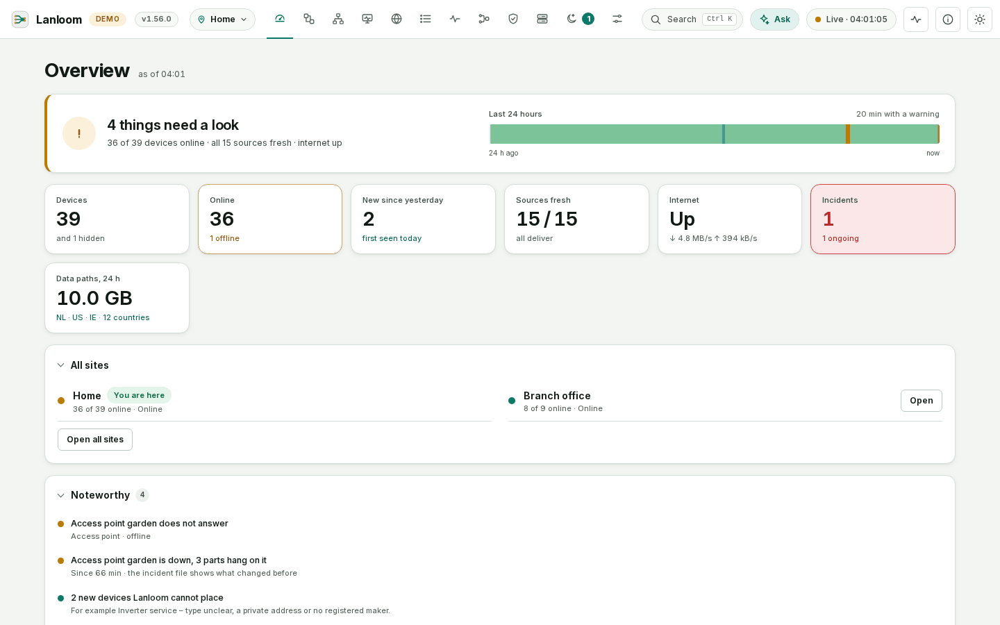
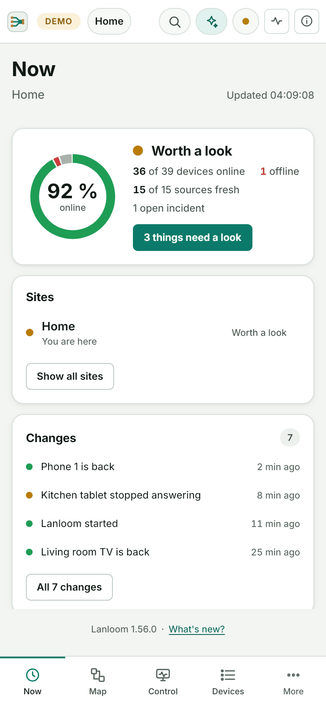
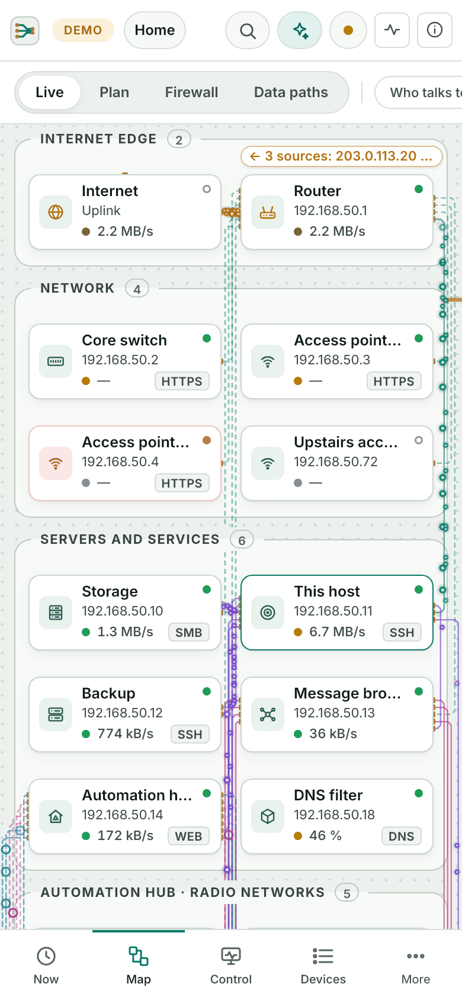
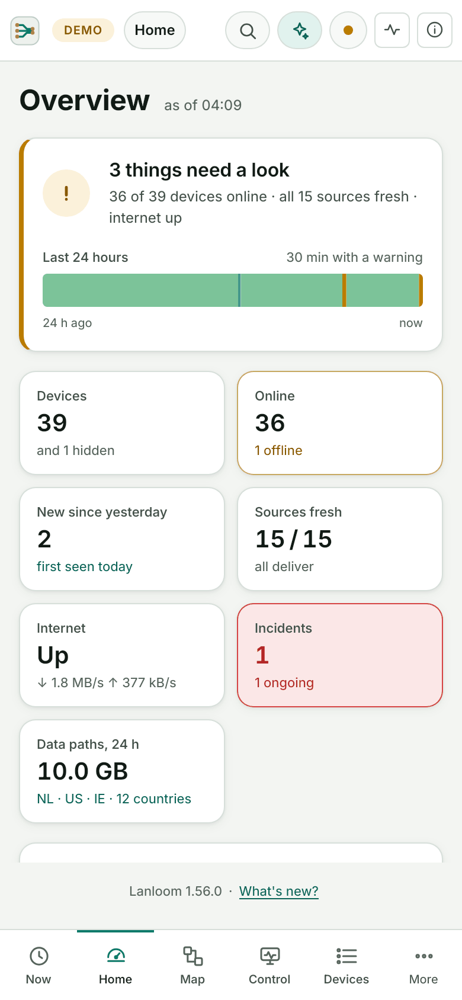
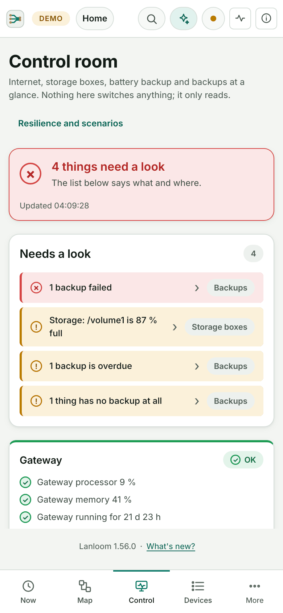
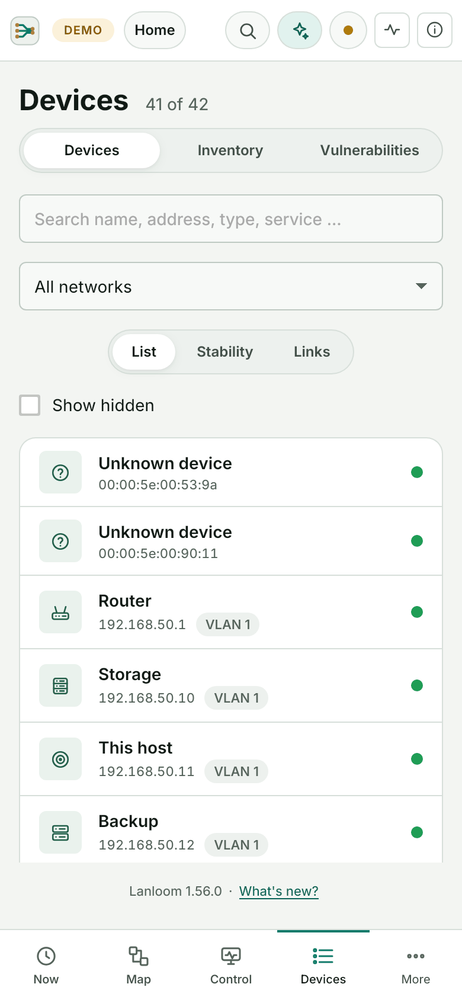
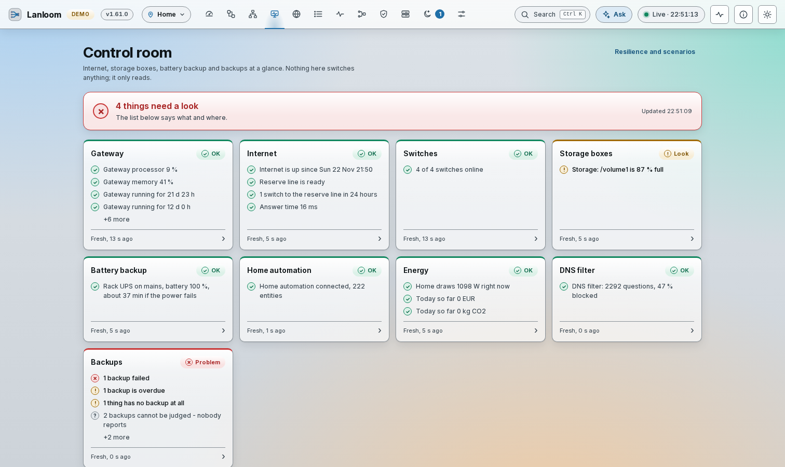
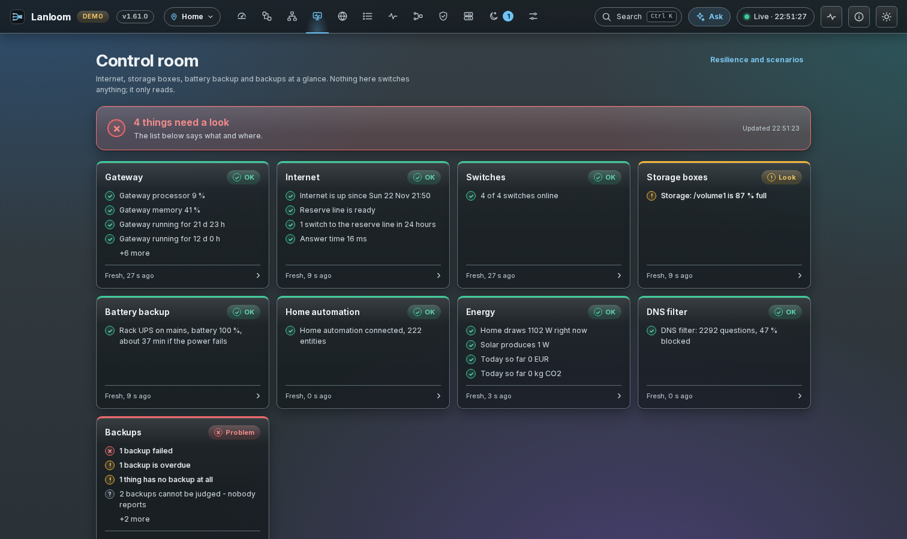

A board, not a hairball
Zones, orthogonal traces, buses and vias. Each dot stands for a fixed number of bytes, so what moves is what was measured; traces without a measurement stay dashed.
Self-hosted network map
Lanloom finds everything on your network and shows it as a living board: devices are components, connections are traces, and measured traffic flows along them as moving dots.
One container, amd64 and arm64Read-only by defaultNothing leaves your networkEnglish, German, French, Spanish, Dutch, Italian
What it does
The start page says in three seconds how the network is doing. Everything below it is one click away and has an address you can bookmark or share.
Zones, orthogonal traces, buses and vias. Each dot stands for a fixed number of bytes, so what moves is what was measured; traces without a measurement stay dashed.
The assistant reads your interfaces and neighbours, proposes private ranges and shows a first picture while the scan continues. Nothing is scanned without your tick in a consent box.
A calm world map by country, with real cables or rain, in 24 hours, 7 or 30 days. Countries and byte counts only, never addresses. Unusual behaviour is called out calmly.
Outages, new and missing devices, refused sign-ins, expiring certificates, changes to the controller. One headline says 'All quiet' or how many things need a look.
The internet with two readings, storage boxes, the battery backup and the backup chains, each saying how old its picture is. Unknown stays unknown, never 'down'.
Pick any device and see what hangs on it and what it depends on, with the reason for every part. Simulate maintenance before you pull a plug; nothing is switched.
Move a device to another network, rename it, give it a fixed address, rehearse a rule. You get a plain-language preview first. Out of the box it only simulates; real changes need an explicit arming step.
Health rings and trends for processor, memory, disk and temperature. A value that will reach its limit within 72 hours is a warning; a daily rhythm never is.
Purpose, room, warranty, owner and the life cycle of every device. Export the plan as PDF, SVG or an editable diagram, with a Redact option for sharing.
With a home-automation hub that has power sensors, grid, solar and battery feed the home and its consumers, drawn like the network, with the cost and CO₂ of the share the grid supplies.
A phone start page with a health ring and the last 24 hours, a focus view around one device, sheets you can drag and an installable app icon.
Home, a holiday flat, an office, each with its own history. Viewer, operator and admin, two-step sign-in with passkeys or an authenticator, and a tamper-evident audit log.
Tour
These are real screenshots of the sample network. Pick a view, a mode and a colour theme.

The overview: how the network is doing, six key figures and what stands out.
The phone gets its own layout, not a shrunken page: a bottom bar with Now, Map, Control room and Devices, and everything else behind More.





Colour themes
One glass theme with a light and a dark face: every box is a pane with a light edge, a soft sheen and the colour of the ground shining through. No blur, so it stays smooth on small machines. Or import a theme of your own; only checked colour values are taken.


Install
Needs a container runtime with compose v2 on amd64 or arm64 and about 300 MB for the image. A small single-board computer is enough for a home network.
curl -fsSL https://raw.githubusercontent.com/robeertm/lanloom/main/deploy/install.sh | shIt installs into ~/lanloom, listens on port 7380 and can add the optional one-click updater. Prefer to read the script first, or use the compose file? Both are in the install guide.
Go to http://<host>:7380. Lanloom prints a one-time setup code to its log and stores it next to the data.
Enter the code and create the administrator. Then confirm the networks Lanloom may look at.
The devices appear while the scan continues, and the adapter suggestions come with a read-only guide. Not sure yet? Explore the sample network first.
Under the hood
The map observes; the app cannot change your devices. Real changes exist only through a separate, optional executor with a signature per change and an explicit arming step.
Every outgoing connection is on a short list that a test enforces. Vulnerability hints, manufacturer names and country data ship inside the image and are never downloaded at run time.
A manual page for every view, a troubleshooting guide, a compatibility matrix, a published security model, signed images with a software bill of materials.
Free for private, non-commercial use with up to 100 devices. Commercial use, and private use with more devices, needs a paid license. Modification and redistribution need written permission.